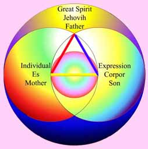

A Vision For Heaven on Earth
The I'hin Prophecy
When the earth is circumscribed around about with such as choose Me (the Great Spirit) I will come hither with a great awakening light to the souls of men and lay the foundation for My kingdoms. On this land [America] will I raise up a people who shall be the fulfilling of that which the I'hins [lost prophetic race remembered by indigenous cultures] profess.Thou [to an Etherean God] shalt look upon the mountains and strong standing rocks, and the thought of thy soul shall pierce them, and the impression thereof shall be as a written book before the races of men in that day [the so called 'New Age' or Kosmon]. Neither shall they know the cause, but they shall come forth in tens of thousands, putting away all Gods and Lords and ancient tyranny, for My sake. Thy soul shall be My talisman, deep engraven in the land and water and mountains. On this land alone shall not any Lord nor God be established by the sword, for it is My land, which I planned for the deliverance of the nations of the earth.
Cree and Hopi Tribe and other Native American Prophecy
"There would come a time, when the fish will die in the streams, the birds will fall from the air, the waters will be blackened, and the trees will no longer be, when the "keepers of the rituals, and customs will be needed to restore us to health. There will come a day of awakening when the peoples of all tribes will form a new world in recognition of the Great Spirit and love all mankind as their brothers, regardless of color, race or religion. Then rivers will again run clear, the forests be abundant and beautiful, the animals and birds will be replenished, children will run free and the needy will be cared for. We shall see how much we owe to those that have kept the stories and rituals alive."The Prophecy of Peter Deunov (1864-1944)
The New Era will build itself around the idea of Fraternity and the earth will become a blessed place. There will be no more conflicts of personal interests; the single aspiration of each one will be to conform to Love. Men will form a family, as a large body, and each people will represent an organ in this body. They will nourish themselves exclusively from products of the vegetal realm. The ardent wave emanating from On High will manifest Love in a perfect manner. It is the end of an epoch; a new order will substitute the old, an order in which Love will reign on earth.The Father's kingdom on earth (From the Book of Oahspe, 1881)
God said:
I have heard thy prayer, O man: Thy kingdom come on earth, as it is in heaven.
Have you considered your words, and are you prepared for it?
Have you fulfilled the commandments, and love your neighbor as thyself?
And have you done unto the least, as you desire thy Creator to do unto thee?
Now, behold, the Great Spirit has sent me, thy God, to answer thy prayer.
I demand of thee, that you have no favorite doctrine above thy neighbor;
And that you are servant to no God, nor Lord, nor Saviour, nor church, unacceptable to any man in all the world.
But, that you serve the Great Spirit with all your wisdom and strength, by doing good unto thy fellow-men with all thy might.
That, because you are strong, or wise, or rich, you understand that you shall use these for raising up such as have them not, believing that the Great Spirit so provided you to that end.
Consider, O man! You have a kingdom already. Would you have two kingdoms?
Behold, the kingdom of man has its power in armies and ships of war.
The kingdoms of thy Father have not these, but love, wisdom, righteousness and peace.
I demand of thee, that you shall give up thy army and navy. Are you prepared to say: To whom smites me on one cheek, I turn the other to be smitten also?
Is thy faith still more in weapons of death, than in the Voice of Everlasting Life?
Do you esteem your armed forces more to be depended on, than the Father?
Are you willing to sacrifice your time and money and self-interest for sake of the Father's kingdom?
Use thy judgment, O man. Since the time of the ancients till now, the only progress towards the Father's kingdom has been through sacrifice. What less can you expect?
If you sell what you have, and give to the poor, your neighbors will imprison you for a madman. If you abnegate yourself and labour for others, they will persecute and revile you.
If you should profess to love thy neighbour as yourself, they would mock at you.
Therefore, I declare unto you, O man, in the land of Uz the Father's kingdom can not be.
But thou shalt go hence; and, behold, I will go with you, and with your neighbour, and show you how to build, even as a kingdom in heaven.
Kosmon: Man's Climax of Development
Being long circumscribed, the world has now attained instantaneous
digital global communication, and is rapidly piecing together
information pouring in from its four quarters, coming through various
scholars, mythologists, historians, scientists, geologists,
archaeologists, adventurers, idealists, new age channelers and mystics,
enabling the re-emergence of ancient wisdom, religious texts and
forgotten rites, along with contemporary traditions and tribal
practices, to guide us in formulating a new planetary culture.
The new technical capability has extended the knowledge and perception
of our environment and given us god-like powers to see the coming and
going of what we make 'reality', and how the unity and wellbeing of
humanity rests upon the love and peace of a universal Person, our inner
voice and teacher emerging from deep within us, who comes into vision
and grows as we seek to assimilate our understanding, direction and
behaviour to all that is good. In Kosmon,
this will culminate in the founding ‘heaven on earth’. Kosmon has its
cause in the completeness of heaven towards which, and in whose image,
the world moves.
Lifestyle
It remains to be seen how change will find a balance between simple and sophisticated, tribal and technological lifestyle, and to what extent we may adapt previous traditions, ethics and social relationships, or retain modern invention, system and order. In this age of liberty we are to take responsibility for the course we choose. May it be one of a moral quality if we are to reach the goal. There will be the family and the celibates, a harmony and balance between the individual and the whole, deriving happiness by living together a pure life, holding all possessions in common and providing for each other.Self sustainability and care for our environment can be creatively managed by using organic methods, seed banks, devices for recycling waste and utilising renewable energy based technology. Ideally a large community will need organic fruit and vegetable gardens, green houses, a healing, learning and arts centre, kitchen and bathrooms, cottage industries to manufacture building materials, textiles, clothes, shoes, musical instruments etc., to provide our needs and to barter.
Tasks will be leisurely performed and orderly, each putting their talents to good use according to need and capability. Thus we can begin working in concert on our gardens and structures (perhaps domes or yurts), to the sound of music and chanting.
Oahspe cautions us to practice rites and ceremonies or face the possibility of not reaching the highest goal. But it doesn’t give any formulae of practice for Kosmon. Neither does any practice in all the world offer something suitable. Therefore we are obliged to develop our own. This entails, by inspiration and what is known, rediscovering eternal rites and ceremonies practiced by gods who are in Jehovih's light. The order, form and expression of the rites and ceremonies are to be inconclusive, ongoing and ever evolving. They are to be a co-creative procedure, an outcome of conditions and participants in that day. We seek harmony, grace and beauty, and draw from the arts, religion, science and Oahspe in addition to what you may contribute.
A suggested outline of daily practice is as follows:
Besides the Holy days given in Oahspe, on the Sabbath day (as given by
the Kosmon
Calendar) there will be prayer, worship, fasting, satsang, sacred
dance and music for those who choose to participate fully, or in part.
Daily prayer and worship will be near sunrise, noon and sunset.
We are mostly akin to Essenes, of the kind that believe that the
Nazarene was physically united in love's completion from birth (the
meaning of IESU), and so couldn’t have had a wife. We are developing a
syncretism of Zoroastrian, Native American, Shinto and Jewish rites and
ceremonies, Confucian, Hindu and Buddhist spiritual practices and
wisdom, and Christian morality. There are elements of Pythagorean,
Platonic, Gnostic, Stoic thought, with Chaldean and ancient Egyptian
influence and Celtic symbolism. We welcome your meaningful jewels of
experience. Since Jehovih is inconceivable and limitless, all discussion
and interpretation of truth can only hope to reach a transient
consensus.
Here is some wisdom from the past:
"When matters come up for discussion, whoever speaks thereon shall speak
in the direction of light, and not of darkness. After the discussion is
finished, the rab'bah shall decree according to the light of the Father
in him. Sakaya (some of whose words were plagiarised by Buddhism) was
here asked: Why not decree according to the majority vote? Sakaya said:
That is the lower light, being the light of men only. For I declare unto
you, you can not serve both Jehovih and men. It is incumbent on every
person in the community that enters the discussion to speak from the
higher light, as they perceive it, without regard to policy or
consequences. And the same law shall be binding on the rab'bah; and
though nine people out of ten side the other way, yet the rab'bah's
decree shall stand above all the rest".
Oahspe
A book that has helped me to find my way is the Oahspe [meaning sky (o), earth (ah), and spirit (spe) in the first language spoken]. It gives the name of the creator as Jehovih. It was channelled in 1881 in the USA.This is a quote from Oahspe regarding the beginning of existence.
"All was. All is. All ever shall be. The All spoke and motion was,
is and ever shall be; and, being positive, was called He and Him. [The
universe expands, the mind projects, time goes forth, these are
positive or masculine attributes, whereas yielding or bearing,
receiving, going within, are therefore negative or feminine.] The All
Motion was his speech.
He said, I Am! And He comprehended all things, the seen and the
unseen. Nor is there anything in all the universe but what is part of
him. He said, I am the soul of all; and the all that is seen is of my
person and my body. By virtue of my presence are the living brought
forth into life.
I am the Quickener, the Mover, the Creator, the Destroyer. I am First
and Last. Of two apparent entities am I, nevertheless I am but one.
These entities are the Unseen, which is Potent, and the Seen, which of
itself is Impotent, and called Corpor [matter]. With these two
entities, in likeness thereby of myself, made I all the living; for as
the life is the potent part, so is the corporeal part the impotent
part.
 Chief over all that I made
on the earth I made Man; male and female made I them. And that man might
distinguish me I commanded him to give me a name; by virtue of my
presence commanded I him. And man named me not after anything in heaven
or on earth. In obedience to my will named he Me after the sounds the
wind utters, and he said, E-O-IH! Which is pronounced Jehovih, and is
written thus:
Chief over all that I made
on the earth I made Man; male and female made I them. And that man might
distinguish me I commanded him to give me a name; by virtue of my
presence commanded I him. And man named me not after anything in heaven
or on earth. In obedience to my will named he Me after the sounds the
wind utters, and he said, E-O-IH! Which is pronounced Jehovih, and is
written thus:
The Creator cannot be referred to as 'It', since He
is a person. If Jehovih is Essence of All, He is also source of male and
female, and all other opposites, therefore beyond duality. It is
supposed that He is the primordial union and balance of them, the
feminine and masculine creative aspects expressing only in creation as a
whole. I choose masculine for the reason given above. The creator's
feminine (the potent unseen aspect) is called Om or Es. The feminine of
earth is Mi. The spirit of a mortal dwells in a womb, ie., his earth
body; consequently the earth is called Mother, while the Ever-Present
Spirit which impregnated earthly things is called Father. In the rest of
this text I refer to the creator as Jehovih, The Great Spirit, or Ormazd
[a Persian name for the creator].
The sign of Eloih, synonymous with E-O-Ih, in the Se’moin tablet of
Oahspe represents the underlying Person, the All Soul. It says:
"It is the circumference of all; it extends from left to right, and from
below upward. It holds the emblem of life."
The Oahspe gives a detailed history of heaven and earth and covers the
mysteries of life and creation, time cycles, ancient civilisations,
prophets and prophecy, origin of religion, race and language in all
continents, life after death, the unseen worlds and its inhabitants, and
the founding of heaven on earth.
There are three creations. Spiritual (etherea or nirvana, the most
subtle, which lies beyond the heavens), atmospherean (intermediate,
heavenly, 'spirit world' or 'the firmament') and corporeal (material).
Only etherea permeates all existence. The earth is surrounded by its
much vaster unseen heavens, which travel together with the earth through
space. These are inhabited by spirits of the dead. The earth bound
spirits (who crave things of the body and ego) remain on the earth or in
the lower realms. They can be raised in purity, wisdom and love to
inhabit higher realms. The Spirit world influences mortals to darkness
or light, unknown to them. Like attracts like, and after death the soul
goes to what it yearned for during life.
Is heaven a state? What you experience while in the world that is
eternal is of heaven. Swedenborg suggests that heaven has no spacial
dimensions, rather states of affection; and no time, but proximity to
the All Perfect.
I quote: "Let the community be sufficiently ascetic to attain the
beatific state [enlightenment], which is the triumph of spirit over the
flesh" (Sakaya).
No one is required to read Oahspe. After the age of maturity, personal
responsibility is between you and your maker. Here, you will not need to
be alone in this.
Who Is God ?
Oahspe speaks of mortals, angels, gods, goddesses and Jehovih. Spirits of mortals that have died are termed angels. Gods are angels that are raised in wisdom and power. The true God of heaven and earth, known as God, son of Jehovih is anointed and crowned by etherians (a higher authority) and describes himself as our elder brother of tens of thousands of years‘ experience.The creator of all these is Jehovih. Only He is unborn, sum and substance of All. When you worship God, consider whether you mean an angel in human form on a throne in heaven, or an inconceivable, infinite person, soul of All and expression of all things, abiding in every blade of grass, and leaf, being the fountain of life and Self of all selfs, speaking in the mountains and forests, sun and stars. It matters little which name you use for the creator if you understand this.
I quote:
"My inspiration upon the bird causes it to sing; by My Presence I teach it to build its nest. By My Presence I colour one rose red, and another white. Proof of My Person is in the harmony of the whole, and of every one being a person of itself, perfect in its order".
There have been Gods and Goddesses throughout past ages in various
cycles of time, who gave scriptures and ruled over the earth and its
heavens for a season, imperceptible to mortals, sometimes for their own
glory, claiming to be the creator.
For this reason Oahspe reads: -
"I am not come to establish, but to abolish all Gods, Lords and
saviours among mortals. For what is past is past."
"Neither shall you have a God, Lord nor Saviour, but only thy creator,
Jehovih! Him only shall you worship forever. I am sufficient unto Mine
own creations."
"And it shall be guaranteed unto them to worship in any way that their
conscience may dictate."
Who Is Jehovih
If people know not their own darkness, who knows if they are not on the downward road?We are told, to do good with all our wisdom and strength, and have faith therein, is being on the road to the All Highest. In believing in an All Person, a Creator, and that they should ultimately see Him, the ancients had an object in view. But with the growth of wisdom, we find we cannot realize an All Person, and so have no object in view, and recoil on ourselves.
In ancient times the Gods persuaded mortals to make stone idols and worship them. And they were sufficient until man attained more knowledge. Again came the Gods to mortals, inventing a large man-God in the sky, persuading them to worship him. He was a sufficient God till man learned to commune with angels, who contradicted that philosophy. Therefore we must ever have an All Highest Person so far ahead that we cannot attain Him. When we have surpassed a Person whose figure and condition we can comprehend, it is incumbent upon us to create within our own souls the thought of an All Person beyond our comprehensibility.
For a basis to reason from, consider the etherean (nirvana), the atmospherean (heavenly) and the corporeal (material) worlds to constitute His body; and the motion therein and thereof, the manifestations of His Power and Wisdom. Since we ourselves have these things in part, we find we have another attribute embracing all the others, which is combination concentrated into one person [binding into one sense of self, or unity of consciousness]. Then we give to Him, who embraces all things within Himself, combination concentrated into one person, otherwise, He is our inferior, which cannot be. [Buddhism says it is the 'Mindstream' that is the 'continuity' which links the Trikaya (three bodies or persons].
Jehovih is not a mere principle or that which is void. An
incomprehensible state can not be substituted for His Person. He is
not a nonentity without sense or unity of purpose but the very Entity
and Person from whom we received our own entity and person. Could man
be a person, save he sprang from a Person? Just as an entity has
aspects, qualities and attributes, Jehovih is the Entity that is All
Knowledge, All Light and All Person.
Can a man learn to sing who does not hear the harmony of a tune? How
then can one harmonize with the Eternal Whole if one does not perceive
Him? Would we forever put our instrument out of tune, and applaud
those who are not attuned. Like a key-note is needed to tune a number
of instruments to harmony, we need faith in an All Highest Person to
live in harmony and be concerted in action.
To become attuned, first with oneself, then with one's immediate
surroundings, then to Spirit and Jehovih so that one moves, acts, and
comprehends harmoniously, is to become one with the Father, who is the
Key Note of Harmony. Without Him, a man is as a ship without a rudder;
the seas around about him drive him to ruin in the end.
Music is of two kinds: sounds and assimilation. Assimilation comes to
the real matter of putting one's behavior in harmony with the
community.

{kind=link}
As is the triangle, He is three things in one which are, first, the ghost, the soul, which is incomprehensible; second, the beast, the figure, the person which is called individual; and third, the expression, to receive and to impart. These three comprise all things; and all things are but one; nor were there more, nor ever shall be. Nevertheless, each have infinite parts, with every part like unto the whole. Each of all created things have these three attributes in them.
Universal Religion and Worship
It would be thought that God is to some extent known by all the religions of the world. Since God, or Great Spirit is understood by all religions to be Father/Mother of All, the source of all love and wisdom, Absolute Consciousness, Indweller/Self in all beings, it is important for us to contemplate, pray to and worship Him/Her so as to receive His/Her love and light and achieve harmony among ourselves and with our environment.We see that world religions can't exist together as a united whole. Wasn't it for this reason that Theosophy said "there is no religion higher than truth", seeing that the creator has to be the same for all. Just as the scientific method sorts out conflicting theories of objective reality into a more streamlined proven model that leads ultimately to All Knowledge of the objective universe, it would be better to re-establish the unity of the whole by adapting a syncretism of the best unbiased subjective truths and philosophical essences common to all religions, rather than a representation of each religion, without losing sight of their wisdom and experience, but rejecting those parts that are in conflict, contradictory, and can not coexist together.
All paths to direct perception of God's light can only be taken step by step. Our progress towards truth should not hinder but assist the freedom of others at their stage of development. Religious practice for the core group (ie those willing to participate) can be weekly fasting, prayer and worship, in which sacred dance, music, devotional chanting and hymns can be a spontaneous unfolding of His Everpresence, each week being new and different, followed by a participatory satsang by any willing member, as a part of their self development, and meditation.
Here are some quotations from Oahspe: -
"I come to give a great religion, yet not to set aside the old; I come
to such as do fulfil the old, and to give them the religion of the
gods themselves"
"Without discipline, knowledge cannot be obtained; without discipline
little good can be accomplished. Forms and ceremonies must accompany
discipline; otherwise inharmony overcomes all. These are religion".
"To do good, with all of ones wisdom and strength is the highest
religion" [Thomas Paine].
"The time of preaching is at an end, save when it is practiced in deed
as it is spoken in words".
"When the discussion turns upon rites and ceremonies, which the
community may adopt, or the music, or the discipline regarding
funerals, or marriages, or births, the speakers shall remember that a
family is composed of old and young; of sedate and jocose; and that
every talent is created for the glory of the whole, and for the glory
of the Creator; and they shall enlarge their understanding, to embrace
the whole. Remembering, it is easier to walk beside a bull, and turn
him in his course, than to come against him for the same purpose.
One person has joy in sacrifice (worship) by clapping his hands and
dancing; another, in poetry; another, in singing; another, in silent
prayers. And yet, one has no preference over another in sight of Him
who created them, for they are His own handiwork. Consider, that you
provide a time and place in the community for all of these in their
own way, directing them holily".
Recovering the Children of the Future
If we are to have religion then it must have a purpose. This can be to drill us to act as a unit to carry out works of charity and harmony, love and righteousness. These can include the adoption of unwanted, abandoned, orphaned infants of all nations and races. Oahspe shows us that the egocentric tendency of those who act out of procreative desire prohibits them from the type of communal care required for founding the Father's kingdom on earth. This is best achieved by celibates who:"feed, cloth and raise up these infants, not after any man's whim or conceit, but according to the accumulated wisdom collected from all the different nations and peoples in all the world, as to how to make the best corporeal and spiritual men and women."
Oahspe predicts Man will systematically learn to find the best way to make the best man and woman out of the infants entrusted to him:
"as to diet, clothing, comfort, cleanliness and avoiding disease; strength and suppleness and swiftness; virtue and modesty; practical and theoretical education; industry and quick perception; willingness to work for one another; trades and occupations; pastimes, amusements and recreations, singing, dancing, and playing with great joy and delight; worship, rites and ceremonies; acquiring seership, prophecy, signs and miracles, su'is (clairvoyance) and sar'gis (spirit manifestation); communing with angels and the value of angels as teachers and instructors by tangible presence and audible voices."
"And above all things, liberty shall be preserved unto all, with
pleasant and enjoyable discipline for everything, after the manner
of the heavenly kingdoms, cultivating every faculty to the utmost,
teaching, from the first, that the eye of Jehovih is upon them, and
that His hand is stretched over them, to bless them, according to
their goodness, purity, love, gentleness and wisdom.
And that they shall not own nor possess individually; but that all
things are Jehovih's, and they, themselves, are angels in mortal
form, created by Jehovih to rejoice and to help one another
forever."
Their offspring ultimately will give birth to a new race that has all the best and perfected attributes of all the others, and they will found new colonies that do "nothing for self sake, but for the good of man and for the honor and glory of Jehovih."
www.sacred-texts.com/oah/oah/oah600.htm
http://www.sacred-texts.com/oah/oah/oah601.htm
Visitors
The community will be a refuge for people seeking peace, companionship and support in an atmosphere of love and caring. You may stay with us to receive help according to your need (physical or emotional problems, unemployed, homeless, addicted etc.) and our evolving capacity to assist you.Ownership
The heart of this land is set aside for service to, and worship of Great Spirit, I Am, Jehovih, the All within and without, beyond any conceivable thought or form, who is the Light and the Life of All. No god or goddess, lord or saviour, master or guru, any idol of a fanciful beast, object or any conceivable image is to be worshipped here. All great beings who have enhanced truth and love, and serve humanity and Jehovih, can be revered. There will be no requirement for any payment, save sharing what you will. But preparation is required, as meat, tobacco, alcohol or drugs is banned, although if you feel you belong with us but have difficulties that you are willing to overcome, you will not be turned away. Vegan diet or better, is encouraged. The so-called sacred drugs, or otherwise, can not be brought in. By these requests we hope to attract like minded people.Who would want ownership save for some injustice or inequality or deficiency. The Earth can not be bought and sold. We came into the world naked. But for the sake of these ideals to be upheld ownership will be asserted where respect is lacking. The world is full of those who believe otherwise, so please grant us our small place in it to practice as we have chosen. Be in Peace, Love and Holy Light and be welcome.
Those who do good works for others and give love in return for hatred are Faithists. Whoever act in this spirit shall be the authority and owners of the property, regardless of belief and financial standing, answerable only to Jehovih, who is above all.
I quote: -
This is wisdom, O man, to have no law or government between man and
wife.
This is ignorance, to have a law between man and wife.
Yet, because there are bad men and bad women who do marry, it hath been
found necessary to have a law between man and wife, as regards their
duties. But consider how wrong it is to have a law between a good man
and a good wife, as regards her duties. Better is it for them to be
thrown upon their own love and judgment.
After such manner gave I governments and laws unto all peoples. To the
bad and evil-minded, rigid laws, with many details; but to the wise and
good, I come now as an emancipator, saying: Go ye, without laws and
government, fulfill your destinies according to your own judgment, that
ye may be an honor and glory to Jehovih. In kosmon, man shall not be
longer driven in yoke and harness, but shall stand upright before
Jehovih, practicing his highest light with rejoicing, being a free man,
and a brother to his God!
Another Quote from Oahspe:
It is a talent to hear My Voice. I bestowed it upon all the living; it
is seated in the soul. By cultivation, it grows and becomes mighty above
all other talents. By its culture, man attains to all possibilities, for
so I created him.
When my voice is weak because of the darkness of people, they call me
conscience, or set me aside as a faint impression. But, with
cultivation, behold, my voice comes with words and with power. Such know
me, and are mighty in good works and wisdom, a proof before the world
that my voice exists.
Jehovih says: Whoso has not heard Me, is in darkness indeed. He has not
yet turned his thoughts inward to purify himself and seek wisdom. Whoso
has heard Me, knows it, and all the world can not convince him to the
contrary.
We have an easily downloadable PDF format “Standard Edition” Oahspe in modern American language. Just upload the "OAHSPE Standard Edition for Screen Reading" PDF file. It will take a while to download, so dont give up while its downloading. In this format, it’s easy to bring up all the instances where a word or phrase occurs. When it’s uploaded, and on your screen, just click on the search icon (the binoculars symbol at the top of the Adobe Acrobat menu), and enter the word or phrase.
Links
Incomprehensible Person" vs "Brahman" as Absolute
The Galactic Alignment
The Binary Research Institute
Electric Universe theory
Journeys into Japanese Culture, the 'Underwater Pyramid' and Oahspe
Identifying Pan, the Submerged Continent
Sam'tu, the sign of the Triangle
Zarathushtrians and Hinduism
Kosmon Calendar
Read ‘OAHSPE’ On Line
Oahspe in Wikipedia
My YouTube Channel